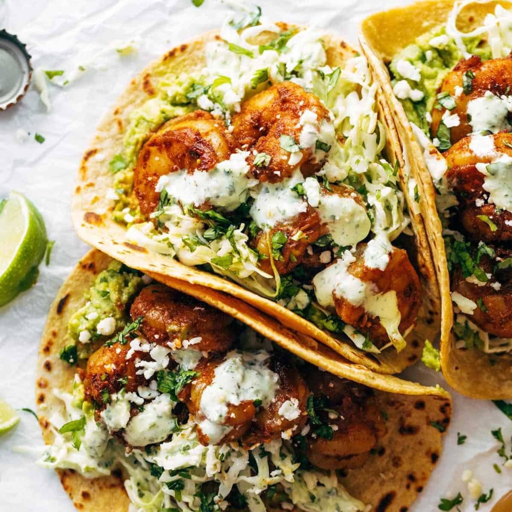

Shrimp Tacos

Description
These tacos are the perfect light (yet filling) dish to ring in the new year! They’re packed with flavor, made with oodles of healthy ingredients, and they’re quick to put together. I’ll share my favorite way to make Shrimp Tacos, but honestly, this shrimp is good enough to stand on its own — the seasoning mix is so delicious (and easy to make with just a few ingredients)
Ingredients
- Shrimp: Shrimp, of course, is a given. Marinate it for a bit in a delicious seasoning mix with some olive oil. Once it’s cooked, drizzle over fresh lime and it’s ready to go!
- Slaw: This slaw is simply shredded green cabbage mixed with a simple cilantro sauce.
- Cilantro sauce: The sauce is multi-purpose: you’ll toss the slaw with the sauce and then also add a drizzle over the finished tacos. Not only is it easy to make, but you can also prep this ahead of time (up to a day in advance).
- Fresh avocado/guacamole: You can make your own quick guacamole or pick some up at the store. Otherwise, a few slices of fresh avocado work well, too. The avocado gives these tacos a delicious creamy element while keeping them healthy.
Directions
- First, marinate the shrimp: Toss together the seasonings and add to the shrimp with some olive oil. This will marinate (minimum 15 minutes) while you prepare everything else.
- Make cilantro lime sauce: Add all the sauce ingredients to a small powerful blender or food processor. Pulse to combine.
- Prepare other toppings: Toss 1/2 cup of the sauce with shredded cabbage (make it even faster by buying a slaw mix at the store), prep some guacamole or slice an avocado, and char/grill/or warm the tortillas (optional).
- Cook shrimp and assemble: The shrimp cooks in minutes in the skillet and then it’s all about assembling the tortilla, slaw, shrimp, avocado/guacamole, and cilantro-lime sauce. A squeeze of fresh lime and these are ready to be devoured!